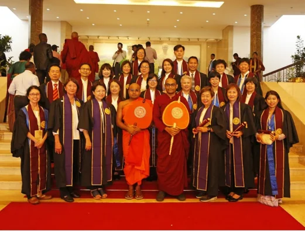
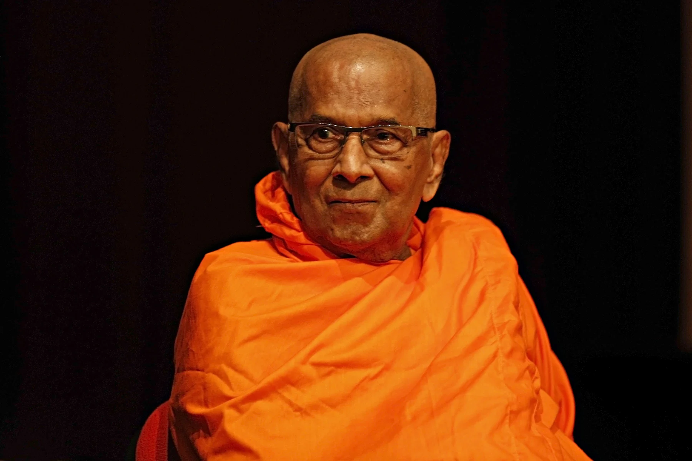
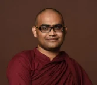
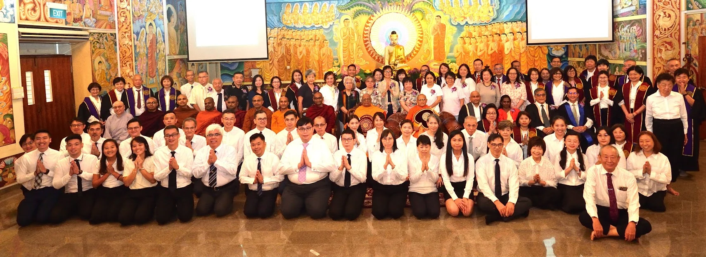

About the College
Our mission is to provide Buddhist education in Singapore
In the world of darkness, BPC illuminates the Dhamma for the past 33 years

Our story
Founded in Singapore in 1993
The Buddhist and Pali College of Singapore was founded in Singapore in 1993 by the late Venerable M. M. Mahaweera Maha Nayaka Thero. It is affiliated to the Budddhist and Pali University of Sri Lanka which was founded in 1982, to provide Buddhist education programmes for monks, nuns and laity.
Its degrees are internationally recognized and it is also a member of the Association of Commonwealth Universities.
Our founding principal was the late Venerable Dr. P. Gnanarama Nayaka Maha Thero (Ph.D. D.Litt.(Hon)). Current principal is Venerable P. Seelananda.
Leadership
Past and present

Founding principal
Late Venerable Dr. P. Gnanarama Nayaka Maha Thero
Ph.D. D.Litt.(Hon)

Current principal
Venerable P. Seelananda

Continue your journey